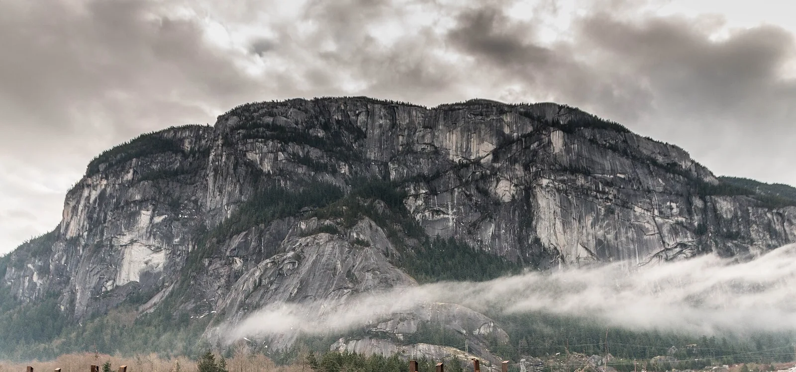
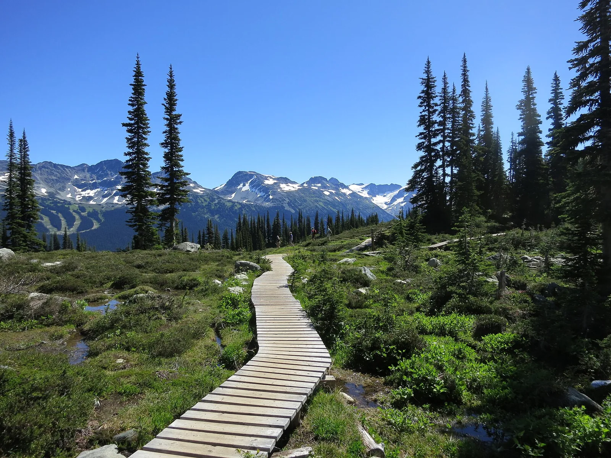
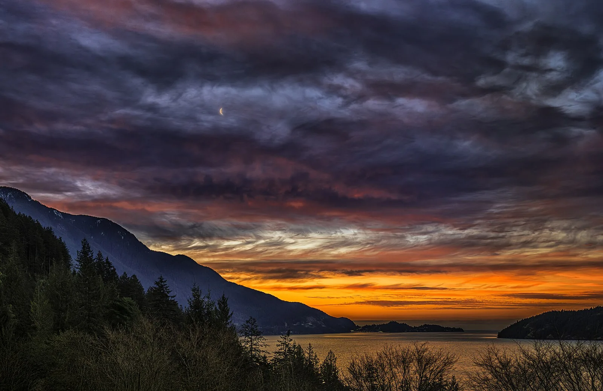
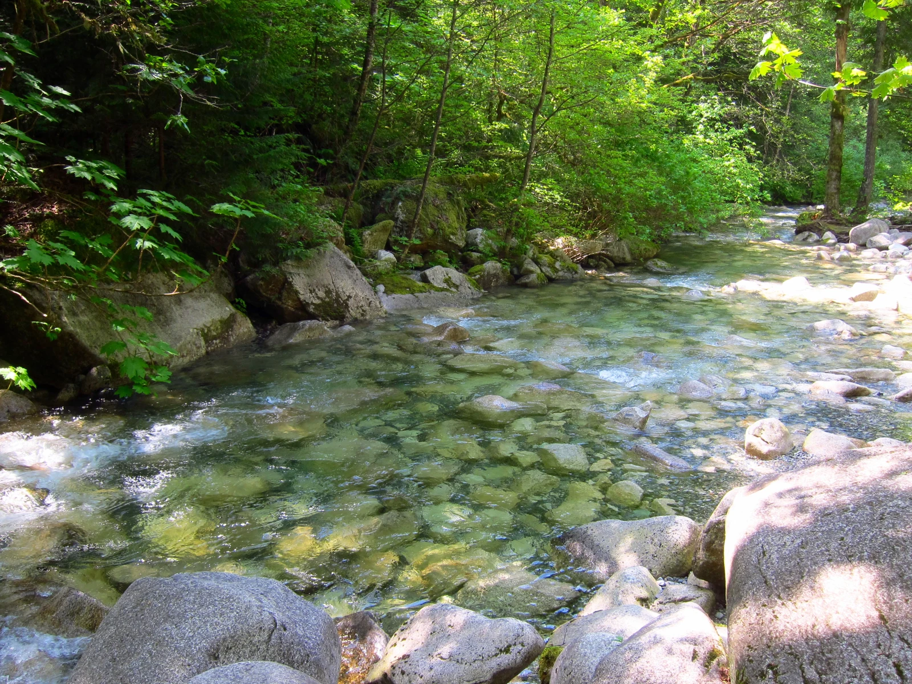
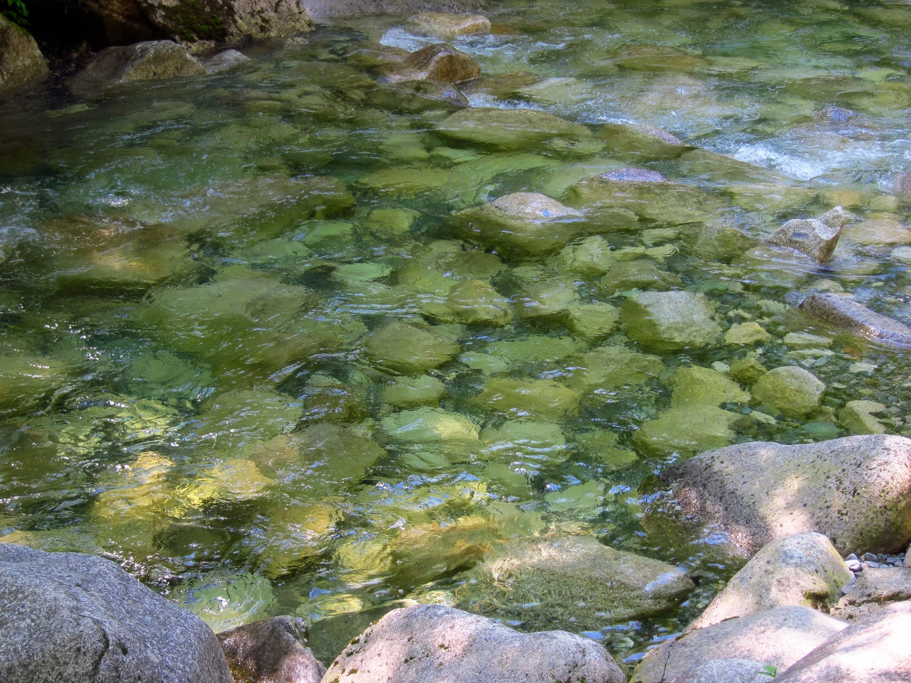
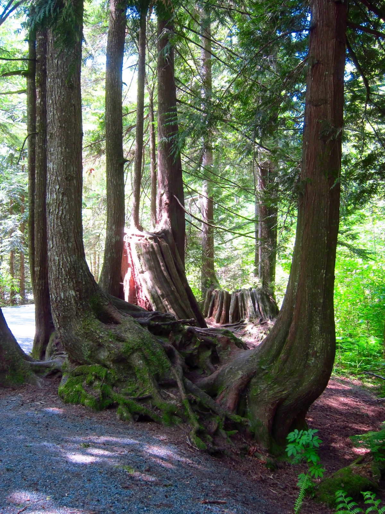

SEA-TO-SKY
OUTDOOR SAFETY
Prepare. Recognize the risks.
Know your next step.
Project display draft
Twelve printable cards for the trifold board. Use the Legal print set for school printing and the assembly guide for placement.
Black & white printing
Height: 129.54 cm. Panels: 24.13 / 80.52 / 24.13 cm. Open-board width: 128.78 cm.
Working layout: right panel assumed equal to left. Confirm that the loaded paper is Legal, rather than Letter (8.5 × 11 in).
PNG preview · PDF preview · Full-size master
White backgrounds, black text and greyscale photographs. Card sizes, numbers and placement are the same as the colour version. Black & white preview
SEA-TO-SKY
Prepare. Recognize the risks.
Know your next step.






My interest in outdoor sports, health and safety led me to this project. The story of a local hiker who spent five nights lost showed me why preparation matters: his trip plan helped his family raise the alarm. I wanted to turn lessons like this into clear advice for people exploring the Sea-to-Sky.

Through this project, I connected with Christine Strub and Laure Lejeune from Squamish Search and Rescue. I asked them questions, and they shared their experiences. I used their lessons on the website: match the route to the group, leave a plan, prepare for a delay and be ready to turn around.
Sources: interviews and linked public guidance. See About → Sources on the website.
Interview participation is not an organizational endorsement.
My guiding question: How can I make outdoor safety advice clear and easy to access?
I created a website with checklists and practical tips for staying safe outdoors. I also created an Instagram account to help people prepare, recognize risks and respond when plans change.

Online Trip Plan Printable trip plan
Leave your route and return time with someone reliable. Agree when they should call 9-1-1 if you have not returned or checked in. Copy, email or print your plan, send it yourself and confirm they received it.
Before your trip: plan your route, check conditions and leave someone a plan.
On the trail: recognize risks and be ready to turn around.
If plans change: find guidance for getting lost, injuries or no cell service.
Explore these guides through the website QR below.

Clear guides for Sea-to-Sky day trips. Prepare, pack and know your next step.
lzl462.github.io/outdoorsafetyThis is not an official rescue site. In an emergency, call 9-1-1.

@outdoorsafety48
Follow @outdoorsafety48 for short outdoor-safety reminders.
instagram.com/outdoorsafety48I conducted the interviews, spent many hours improving the pages and manage Instagram. AI helped with transcription, wording and code; GitHub tracks changes.
What I learned:
My reflection: Clear advice takes more than collecting facts. I need to check the information and make it easy for someone else to use.
Next steps: Keep improving the site and Instagram. Research, communication and digital design connect to my interests in medicine and sport. I may explore SAR volunteering; translations are a later idea.
The 100 mm line on each sheet shows the intended scale. Printing and mounting have not been completed.